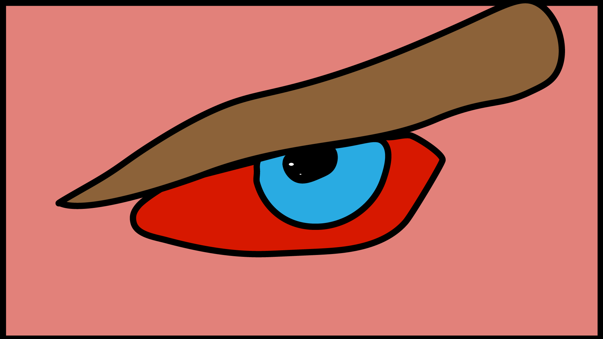

For this assignment, I created an animated GIF of a blinking eye to represent anger and inner conflict inspired by Anakin Skywalker from Star Wars. I chose the eye as my subject because it is one of the most powerful ways to communicate emotion without words — a slow, heavy blink can suggest someone holding back rage or on the edge of losing control, which is exactly who Anakin is as a character. Anakin spends his entire story fighting against his own emotions, from losing his mother to fearing the loss of Padmé, and his anger slowly builds until it consumes him completely. Each blink in my GIF represents that internal struggle, a moment where he tries to suppress what he feels but the emotion is always visible underneath. I wanted to isolate just the eye rather than a full face because anger is something people try to hide, and the eye is where that hiding fails. My GIF tries to capture that tension — the moment just before someone gives in to what they have been fighting against.